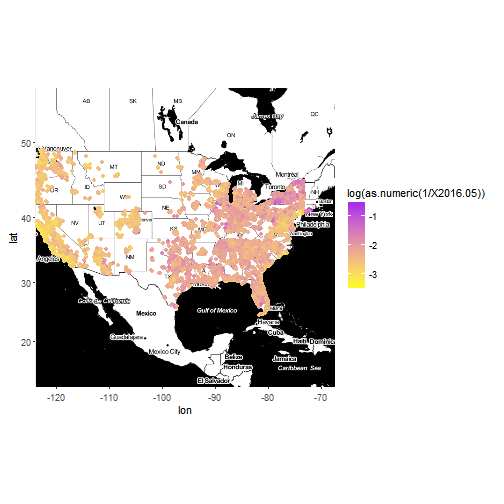
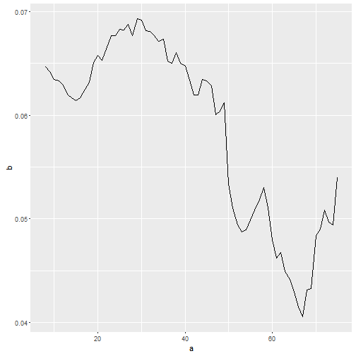

- Investors don't know how to find good real estate deals outside their states
- Many factors/(income, population, safety etc./) affect return
- This study will investigate their relationships with return
student
investor
In this figure, purple means high return and yellow means low return. 
The code for previous plot is as follows. Data are from Zillow.
library(zipcode)
library(ggmap)
data(zipcode)
zip_price_rent <- read.csv(file="F:/R/slidify test/Zip_PriceToRentRatio_AllHomes.csv")
map<-get_map(location='united states', zoom=4, maptype = "toner", source='google',color='color')
zipmerge <- merge(zip_price_rent, zipcode, by.x="RegionName", by.y="zip")
ggmap(map) + geom_point(aes(x=longitude, y=latitude, show_guide = TRUE, colour=log(as.numeric(1/X2016.05))), data=zipmerge, na.rm=TRUE) + scale_color_gradient(low="yellow", high="purple")
This example is Zip#10025 from 10/2010 to 05/2016
exp <- as.data.frame(cbind(8:75, 1/t(zipmerge[1,8:75])))
colnames(exp) <- c("a", "b")
ggplot(data=exp, aes(a,b)) + geom_line()
